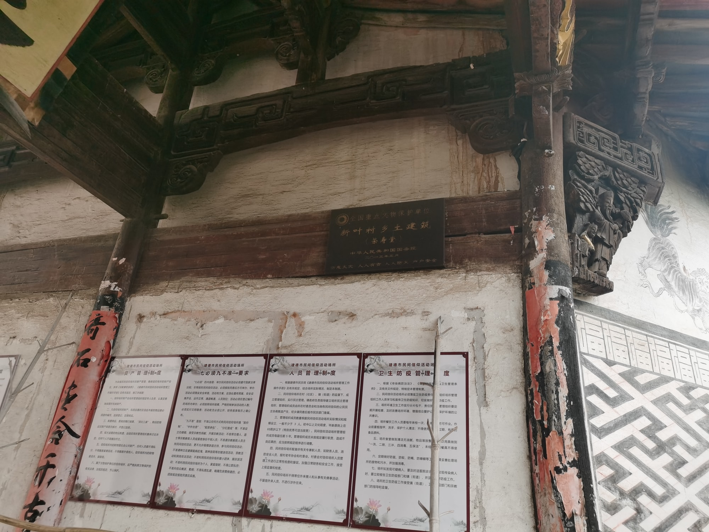

国保宗祠建筑
檐下旧雕，静守一隅荣寿堂
荣寿堂是新叶村叶氏的一座支派祠堂，也是村中保存较为完整的祠堂之一。建筑坐西北朝东南，门前原有一方水塘。
01
顺着村巷走近门楼
从村巷走近荣寿堂，门楼、八字墙与周边老屋共同收束出一处尺度亲近的入口。它不像总祠那样拥有开阔前场，而是顺着街巷展开，使宗祠空间自然嵌入日常通行的路径。
02
檐下的旧日木雕

荣寿堂虽不张扬，檐下的木构却颇见功夫。梁枋与雀替之间雕着人物故事与花卉禽鸟，层层叠叠，刀工细致。历经岁月，这些旧日木雕依旧清晰，透出当年匠人对这座支祠的一番用心，也是它最值得驻足细看的地方。